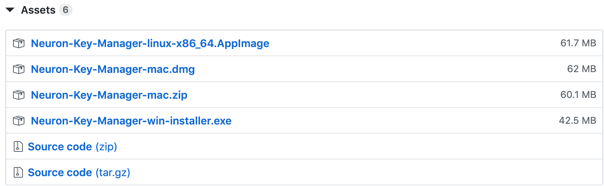
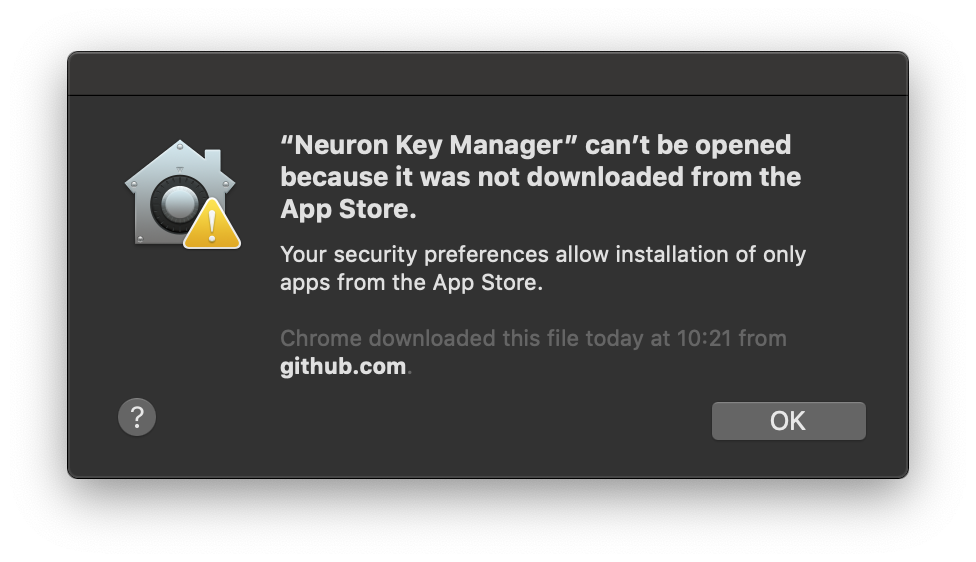
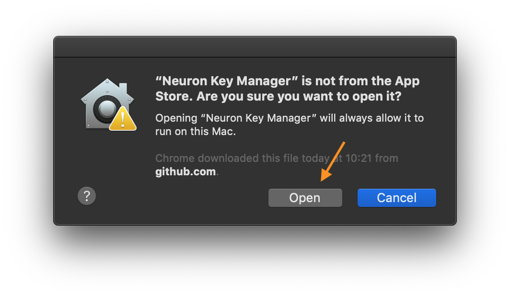
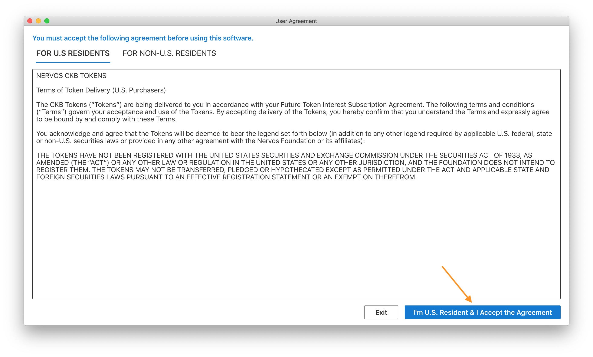
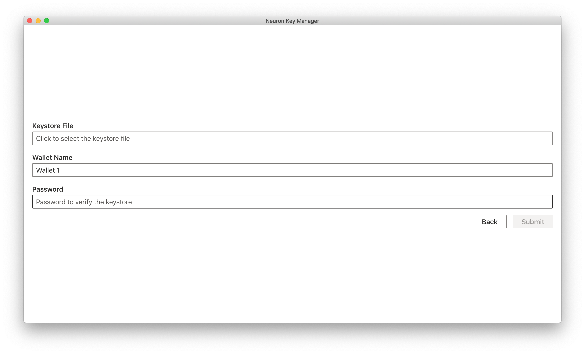

Neuron Key Manager
To manage your assets on Nervos CKB, you will need a Neuron Key Manager application. This tutorial covers how to install and use the basic features of Neuron Key Manager.
Install
- Go to Neuron Key Manager download page
- Choose the correct file based on your device operating system

- Install the file on your device
Open
Windows
When you open the application for the first time, you may get this message (see below). Click More info

Then click Run anyway:

MacOS
When you open the application for the first time, you may get this message (see below).

The solution is to open System Preferences, and click Security & Privacy, you will see this message (see below), click Open Anyway.

Then re-open the Neuron Key Manager application: ( click Open )

Linux
Make the downloaded AppImage file executable before using it. Open a terminal and run the following shell code.
chmod a+x Neuron-Key-Manager-linux-x86_64.AppImage
Disclaimer
- For U.S. Residents

- For Non-U.S. Residents

Get Started
There are 3 ways to generate a wallet:
- Start from scratch
- Recover wallet
- Import from keystore file
1. Start from scratch
Step 1: Create a wallet

Step 2: Save wallet seed (mnemonic) phrase
The wallet seed is the mnemonic phrase of the private key. You can use these words to recover your wallet (address).
Record and save them these words in a safe place.

Step 3: Input wallet seed (mnemonic) phrase
Input wallet seed (mnemonic) phrase from step 2.

Step 4: Name your wallet and set password
The password is used for security-related actions, eg:
- backup wallet
- delete wallet

Step 5: Address generated

This address can be used as the Receiving Address for the Nervos token sale on Coinlist.
Please keep the seed (mnemonic) phrase and keystore file safe. Do not disclose the details to anyone or you may risk losing all of your tokens.
You can use the seed (mnemonic) phrase or keystore file to manage your tokens after Nervos CKB mainnet launch.
2. Recover wallet
Step 1: Click "Import Wallet Seed" tab

Step 2: Input wallet seed (mnemonic) phrase
Follow the next instructions to complete the process.
3. Import from keystore file
Step 1: Click "Import From Keystore" tab
Step 2: Input keystore file
The password is the password set previously when the wallet was backed up.
 And follow the next instructions.
Backup wallet
Backup your wallet into a keystore file, and recover the wallet from keystore file when you need it.
Step 1: Click "Backup Current Wallet"

Step 2: Input password
Set a password to protect the keystore file. When you recover the wallet from the keystore file, you will need to input the password.

Step 3: Choose where to store keystore file

Notice: if you lose your wallet, nobody can recover it. So remember to backup all the information!